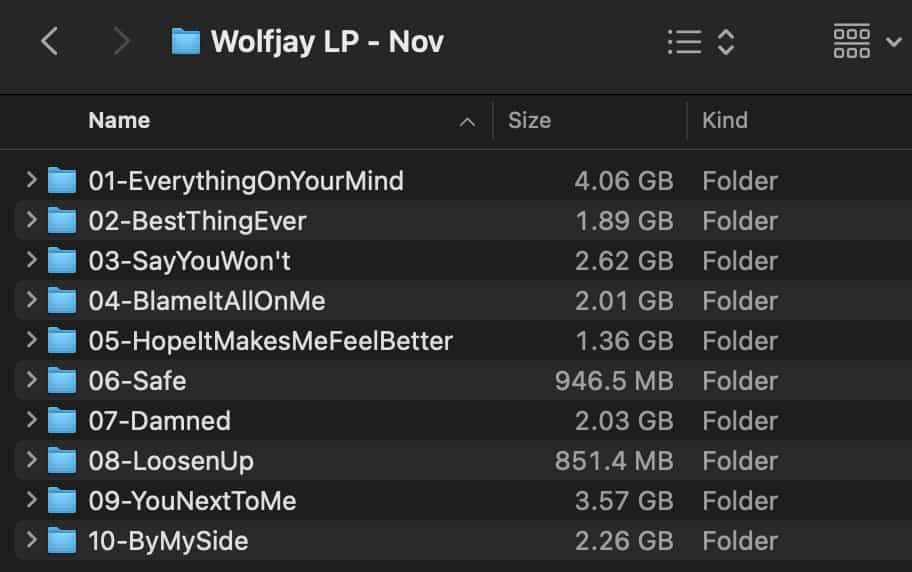

Long time, no blog! 💖 This year, my brain has been a bit fried, and posting content online has regularly made me feel anxious. As a result, I have mostly kept to myself. It has been nice, but I still wanted to sum things up and share a little year in review or annual report.
In 2023, my main focus has been getting my life together. I have refined and refocused my live setup, and I have become very comfortable with taking my ideas from inception to performance. Additionally, I have been busy settling into a new full-time job. I am hoping that next year I will be able to dedicate more time to music now that things have settled down a bit.
Without further ado, here are five things I did this year with Wolfjay! ❤️
## 1. Played at Transgenre festival
I was super lucky this year to play a bunch of amazing queer events, from Gaytimes, Minus18’s Wear It Purple Day event , Bonez Queer Party, and support Brendan Maclean at his Melb show — but the highlight by far was heading to Sydney to play at the first Transgenre festival!
Organised by my friends Ellie and Tim, it was a super special show, and I felt very lucky to be a part of it.
### “Wolfjay is glorious. Hyperpop doesn’t do it justice, this just plain soars, live autotuned vocals over truly magnificent beats and pads, it’s enough to put a roar in the quietest of throats. Absolutely brilliant.”
## 2. Was easy on myself
Outside of music, this year was marked by some very rough and stressful moments. As I grow older, I realize the importance of taking time to recover from these moments, to prevent them from haunting you later.
I have been taking things slow and allowing myself to rest. While I definitely want to release more music in the future, I have also come to realize that releasing for the sake of releasing can lead to burnout and hinder the achievement of larger long-term goals.
Yes, utilizing social media, performing shows, and being active can all contribute to the success and reach of a project. However, it is also perfectly acceptable to step back from these activities during quieter seasons. You don’t always have to be releasing new content. You don’t always have to be focused on PR.
As part of the generation that remembers using the internet for the first time and creating online accounts, I understand the tangible cost of having a platform. It can create opportunities, but it can also come at a price. Be cautious and thoughtful about what you share with the world, as everything comes with a cost.
## 3. Need, Want, Will.
I was able to take a few weeks off work in April and planted myself in the dining room of my house with a little recording setup and decided to work on some new music! And for extra fun (aka stress) I decided to throw a listening party/house show at the end of it 🙃
I got into a good swing of things each day, and the night of the 14th came around very quickly! About 30 friends packed into my little cottage home to hear the record, while my friend DJ aka @bright_garbage accompanied with some incredible live projection visuals.
I published my performance of 6 of my favourites on Youtube and Bandcamp as ‘Need, Want Will’, a Wolfjay live performance project. It’s the first little preview of songs that’ll be on the debut wolfjay album 💖
→ Buy Need, Want, Will on Bandcamp
## 4. Worked on my debut album
It’s not ready yet, but I spent heaaaaaaaps of time this year on my debut album. As of today, the 23rd of December, I’ve made 134 iterations across the 10 songs on the albums tracklist, and awfully close to 1,000 hours all up. Yikes.

I don’t have a release date yet, but rest assured I want this record to be really great and am giving it the time it needs to be the best thing I could possible make.
## 5. Worked on my production + mixing + songwriting skills
This year, I dedicated a significant amount of time to honing my music-making skills, specifically related to album production. I’m hopeful that all the effort I put into it will pay off when it’s time to release the album. It’s definitely already paid off a lot with my production and mixing for songs in my live sets!
Additionally, I’ve had a few sessions with musician friends, sharing the album with them and seeking feedback on the songwriting. I believe that with any debut album, it can be challenging to focus and clearly convey the ideas you want to express. There are years of ideas competing for attention, all trying to be included. In the past, I feel that my songwriting hasn’t been as strong as my production or arrangements, but I’ve dedicated a significant amount of time this year to improving in that aspect.
### 2023 was quiet and fun 📫 am excited to share what I’ve been working on in 2024! 💖 🏡
If you liked this you can tip me a few dollars :)
You can also listen to my music on streaming services,
or buy it on bandcamp, or check out more of my work.
Thank you for supporting the work of an independent, self-funded, non-binary artist 😌🧡✨